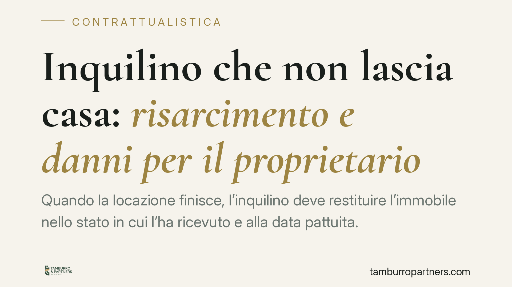

Inquilino che non lascia casa: risarcimento e danni per il proprietario
Quando la locazione finisce, l'inquilino deve restituire l'immobile nello stato in cui l'ha ricevuto e alla data pattuita. Se il rilascio tarda o l'immobile è danneggiato, il proprietario ha strumenti precisi per tutelarsi. Il Codice civile distingue tra ritardo nella riconsegna e danni materiali, con obblighi risarcitori differenti. Vediamo cosa prevede la legge e come muoversi.

Inquadramento normativo
La disciplina si concentra su tre norme del Codice civile.
L'art. 1590 c.c. impone al conduttore (l'inquilino) di restituire la cosa nello stato in cui l'ha ricevuta, salvo il deterioramento derivante dall'uso normale. In pratica: usura fisiologica sì, danni evitabili no. Se manca un verbale di consegna iniziale, la norma presume che l'immobile sia stato ricevuto in buono stato di manutenzione, spostando sull'inquilino l'onere di provare il contrario.
L'art. 1588 c.c. affianca a questo la responsabilità per perdita e deterioramento della cosa che avvengono durante la locazione, salvo che l'inquilino provi che sono accaduti per causa a lui non imputabile. È una responsabilità presunta: il proprietario non deve dimostrare la colpa, è l'inquilino a dover dimostrare l'assenza di colpa.
L'art. 1591 c.c. regola invece il ritardo nella riconsegna. Il conduttore in mora è tenuto a corrispondere al locatore il canone convenuto fino alla riconsegna, oltre al risarcimento dell'ulteriore danno. La Cassazione ha chiarito che il canone continua a essere dovuto in via automatica, mentre il maggior danno (per esempio la locazione più vantaggiosa persa, o la vendita saltata) va provato in modo specifico dal proprietario.
Implicazioni pratiche
Per il proprietario la distinzione è decisiva.
Sul ritardo: finché l'inquilino occupa l'immobile oltre la scadenza, deve pagare un importo pari al canone. Questo vale anche se il contratto è cessato: non si tratta di un nuovo affitto, ma di un'indennità di occupazione. Il canone resta il parametro minimo garantito, senza bisogno di prove ulteriori.
Sul maggior danno: qui serve documentazione. Se un altro inquilino era pronto a subentrare a un canone superiore, o se una compravendita è sfumata per la mancata liberazione dell'immobile, il proprietario deve dimostrare il nesso tra il ritardo e la perdita concreta subita.
Sui danni materiali: il confronto tra stato iniziale e stato finale è il cuore della questione. Senza un verbale di consegna dettagliato, con foto e descrizione, la ricostruzione diventa complicata e spesso conflittuale. La presunzione di buono stato aiuta il proprietario, ma un'istruttoria ben fatta la rende molto più solida.
Attenzione al deposito cauzionale: non è un automatismo. Il proprietario non può trattenerlo a piacimento, ma deve giustificare la ritenzione con danni effettivi e quantificati. Trattenere la cauzione senza titolo espone a contestazioni e interessi.
Cosa fare in concreto
- Redigete sempre un verbale di riconsegna in contraddittorio con l'inquilino, con data, descrizione dello stato dei locali e fotografie. È la prova più efficace in caso di contestazione.
- Formalizzate per iscritto la mora, sollecitando la riconsegna con comunicazione tracciabile (PEC o raccomandata) e indicando la data di scadenza del contratto.
- Documentate il maggior danno raccogliendo prove concrete: proposte di locazione a canone superiore, preliminari di vendita, corrispondenza che dimostri l'occasione persa.
- Quantificate i danni materiali con preventivi o perizie prima di trattenere il deposito cauzionale, evitando ritenzioni sommarie.
- Valutate l'azione giudiziale per il rilascio e il risarcimento se il dialogo non porta risultati, verificando i termini di prescrizione applicabili.
La gestione più delicata resta quella probatoria: l'esito di una controversia sul rilascio dipende quasi sempre dalla qualità della documentazione raccolta a monte, non dalla sola scadenza contrattuale. Consigliamo di predisporre la documentazione fin dall'inizio del rapporto, quando i rapporti con l'inquilino sono ancora distesi.
Disclaimer
Contributo informativo a cura di Tamburro & Partners - Avv. Giuseppe Tamburro. Non costituisce parere legale.
Ogni contratto ha il suo equilibrio.
Se vuoi una revisione delle clausole o una redazione su misura, scrivi allo studio. Ti rispondiamo entro un giorno lavorativo.